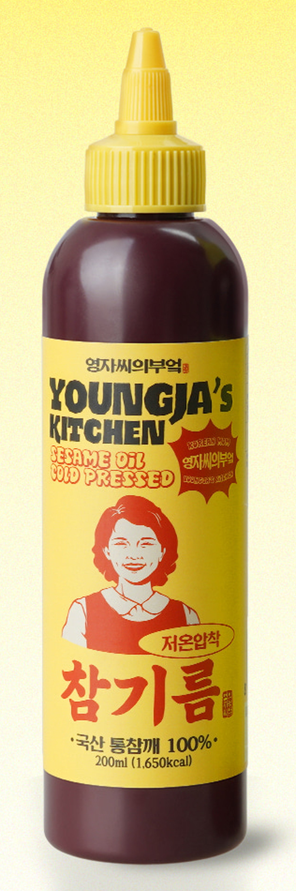

처음 사용한 전체 사진
1000×1000 · 기존 원본 보존

2026.11.25 · 제품 사진 비교 · 새 영상 0편
기존 사진은 그대로 두고 제품만 잘라 낸 입력과 로컬 2K 확대본을 별도로 보관했습니다. 원본 파일은 교체하지 않았습니다. 기본 확대와 AI 보정을 구분하고, AI 처리에서 글자 획이나 질감이 달라졌는지도 비교합니다.
별도 RealESRGAN 모델로 처리한 AI 2K 확대본과 기본 확대본을 함께 비교합니다.
1000×1000 · 기존 원본 보존
316×950 · 원본 픽셀 그대로

681×2048 · Lanczos 보간 · AI 보정 없음

681×2048 · RealESRGAN_x4plus · 이 PC에서 처리

로컬 AI 확대본은 기본 확대본보다 배경 노이즈가 줄고 큰 글자·노즐의 경계가 선명해 보입니다. 병과 노즐의 전체 형상은 같은 계열로 유지됩니다. 다만 작은 글자의 획과 라벨 초상·질감은 AI가 보정한 픽셀이므로 인쇄 원문이 완전히 보존됐다고 판정하지 않습니다.
이번 결과는 별도 RealESRGAN_x4plus 모델을 이 PC의 GPU로 한 번 실행한 것입니다. 이 PC에서 독립적으로 처리했습니다. 이 확대본을 영상 모델에 넣는 시험은 아직 하지 않았습니다.
두 사진을 골라 영문·한글·초상·라벨 경계를 대조하세요. 아래 확대는 화면 표시 배율이며 파일 해상도나 새 원본 정보가 늘어난다는 뜻은 아닙니다.
2K는 여기서 긴 변 2048px을 뜻합니다. 원본 제품 픽셀과 확대된 픽셀은 구분하며, 확대만으로 영상의 라벨 유지가 보장되지는 않습니다. 기존 제작 사진·UUID·이전 영상은 변경하지 않았고, 이 사진으로 새 영상도 만들지 않았습니다.
AI 확대 모델 출처: Real-ESRGAN 공식 프로젝트 · BSD-3-Clause. 프로그램 추가 설치·외부 유료 생성·새 영상 생성은 하지 않았습니다.
사진을 불러오는 중입니다.